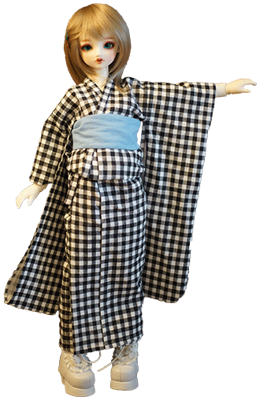
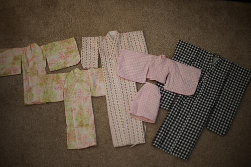

Happy hinamatsuri!!! Who better to celebrate with than hina?? my first memory of this holiday was the episode of pokemon where jessie and misty get in a fight over hinaningyou. I was pretty young! sorry i didnt make a junihitoe for her. maybe someday ill have way too much time on my hands
i made 8 party hats last night! I've been wearing mine for a few hours and i regret using acrylic yarn because its so itchy!!

Japan Ai and a Leekeworld wig showed up this morning. Japan Ai will definitely be a quick read because it's just a picture book. My copy is an ex library copy which i wouldnt care about if it didnt have the big MANGA!!! TEEN!!! on the spine. how tacky ;_; the wig is nice but i didnt realize it has asymmetrical bangs. it looks a lot more punk than i anticipated but hina can be punk sometimes!

my hinamatsuri present to you all is a pattern for a yukata! check out my new patterns page under dolls! it's a little half a*sed but just send me an email if you get confused. i could probably use one or two more diagrams. send me a photo if you make one! i'll be so happy
here's a photo of all the kimonos I've made so far. This one is the 2nd one where ive had a reference. The first one didnt even fit around my DD's hips! i went through a ton of different sleeve to body ratios. i was pretty off for a lot of them! i kept making the body way too thin and the sleeves way too wide.
Extra bonus: Here's my hot take on today's current event! take a look!